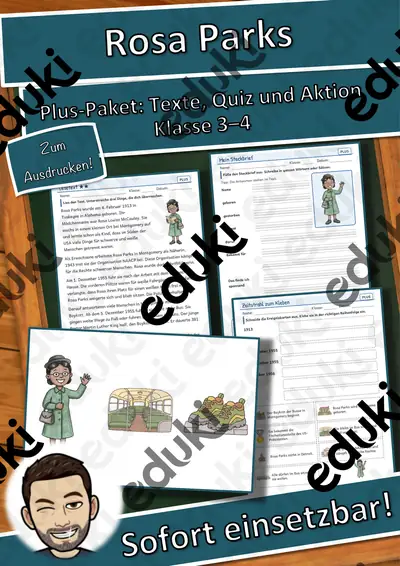
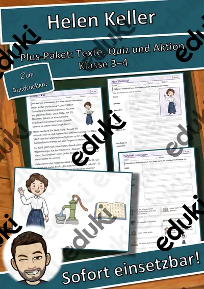
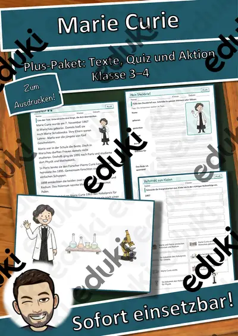
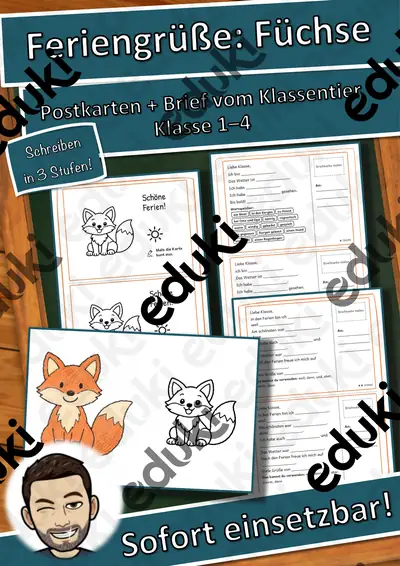
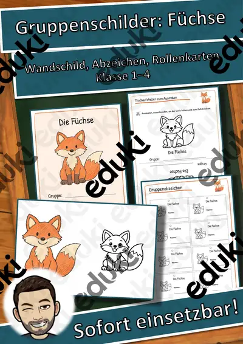

Hörwerkstatt Geräusche: Geräusche unterwegs – Hörstation, 3 Stufen & Test (Klasse 2–4)
Genau hinhören, richtig beschreiben, selbst machen: In der Hörwerkstatt „Geräusche unterwegs“ (Straße und Stadt) erkennen die Kinder sechs Geräusche – per QR-Code mit dem Tablet oder Handy anhörbar –, bestimmen Lautstärke, Tonhöhe und Dauer, finden die passenden Wörter und gestalten am Ende eigene Klänge und eine Partitur.
Dreifach differenziert – alle arbeiten am selben Thema:
- ★ Bilder helfen beim Erkennen und Zuordnen
- ★★ Wörter selbst finden, Klang bestimmen
- ★★★ genau beschreiben, ohne Bildhilfe, eigene Sätze und Ideen
Die sechs Geräusche: die Hupe, die Fahrradklingel, die Schritte, die Ampel, der Hammer, die Sirene.
Inhalt (18 Seiten + Deckblatt):
- Hörstation per QR-Code: 6 Geräusche (je 2x) plus Hörtest für den Leistungsnachweis – selbst synthetisierte Klänge
- Hörrätsel in drei Stufen (Bilder · Wörter und Klang · genaue Beschreibung)
- Geräusche in Worte fassen: Nomen mit Artikel, Verben, Adjektive
- Lautmalerei-Werkstatt (Onomatopoesie)
- Geräusche-Geschichte, Sortieren nach Lautstärke und Tonhöhe
- Hörspaziergang mit Forschungsbogen und Hör-Karte
- Klangwerkstatt: alle Geräusche mit Alltagsdingen selbst machen
- Geräusche-Partitur (grafische Notation) lesen, schreiben und komponieren
- Klanggeschichte / Drehbuch, Hör-Memo zum Ausschneiden
- Kurztest mit 12 Punkten und Notenschlüssel, Ich-kann-Check mit Hinweisen zum Ohrenschutz
- Lösungen mit Muster-Antworten und Lehrkraft-Seite mit Verlauf in 4 Stunden und Lehrplanbezug
Einsatz: Musik, Sachunterricht, Deutsch (Wortschatz, Hörverstehen) in Klasse 2 bis 4, Förderunterricht, DaZ, Vertretungsstunde, Stationenlernen, Wochenplan. Dauer: 3 bis 4 Unterrichtsstunden, alle Seiten auch einzeln einsetzbar. Für die Hörstation wird ein Gerät mit Internet benötigt.
Teil der Reihe „Hörwerkstatt Geräusche“ (6 Einheiten: Zuhause, Straße, Natur und Wetter, Klangeigenschaften, Geisterhaus-Hörspiel, Körperklänge) – im Gesamtpaket günstiger. Eine kostenlose Lauschtour (Hör-Bingo und Mini-Hörrätsel) zum Ausprobieren gibt es ebenfalls bei uns.
Texte, Aufgaben, Geräusche und Layout eigene Erstellung (Geräusche selbst synthetisiert, Ansagen mit Text-to-Speech). Bildsymbole aus Noto Emoji (SIL Open Font License), keine Fotos, keine realen Personen, keine Marken. Texte mit KI-Unterstützung erstellt und geprüft.
Viel Freude beim Hören wünscht Snice! :)
Ähnliche Materialien

Persönlichkeiten-Werkstatt: Helen Keller Steckbrief
Persönlichkeiten-Werkstatt: Rosa Parks – Steckbrief zum Lesen und Ausfüllen, Klasse 3–4 (kostenlos)

Persönlichkeiten-Werkstatt: Rosa Parks Plus-Paket

Persönlichkeiten-Werkstatt: Helen Keller Plus-Paket

Persönlichkeiten-Werkstatt: Marie Curie – Steckbrief zum Lesen und Ausfüllen, Klasse 3–4 (kostenlos)

Persönlichkeiten-Werkstatt: Marie Curie Plus-Paket

Feriengrüße Fuchs: Tierbande Klassentier, Schreibanlass in 3 Stufen
